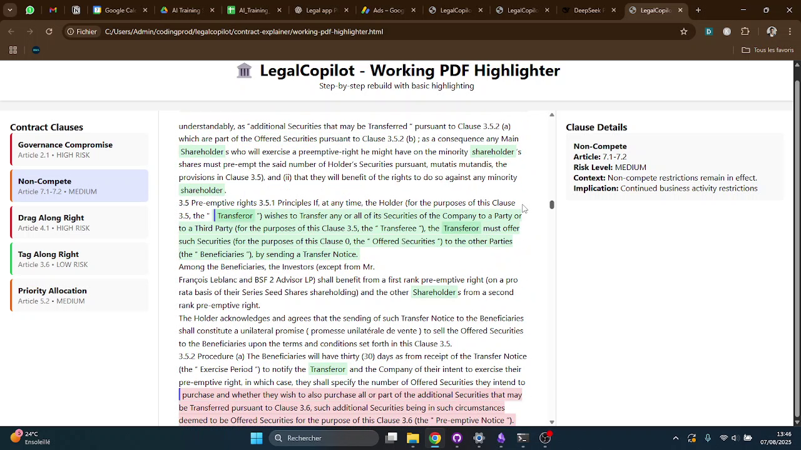

Frame 1 - 0.0s
Issues Found:
Frame 2 - 5.0s
Issues Found:
Frame 3 - 10.1s
Issues Found:
Frame 4 - 15.1s
Issues Found:
Frame 5 - 20.1s
Issues Found:
Frame 6 - 25.2s
Issues Found:
Frame 7 - 30.2s
Issues Found:

Frame 8 - 35.2s
Issues Found:
üìù Overall QA Summary